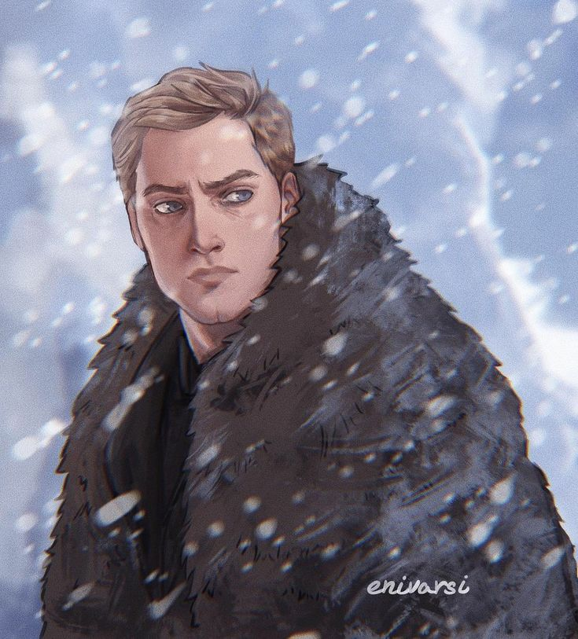
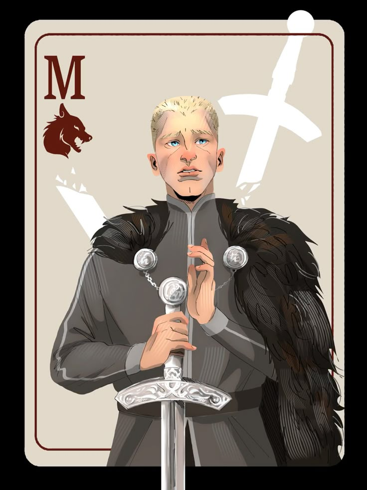
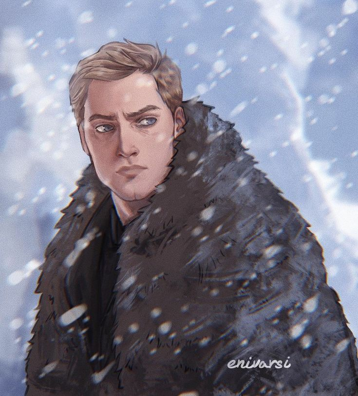
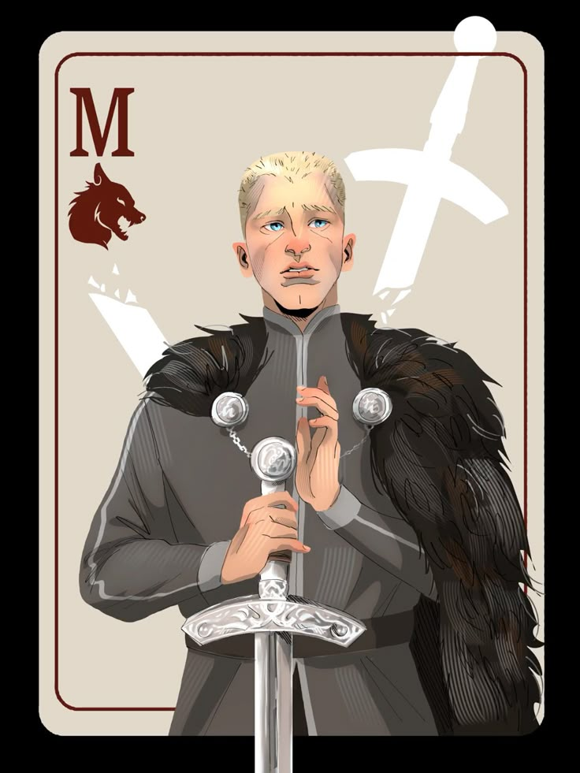
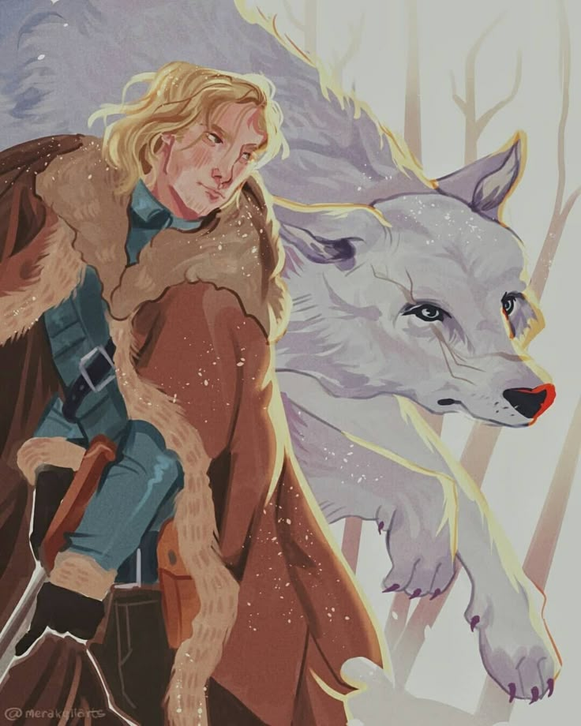
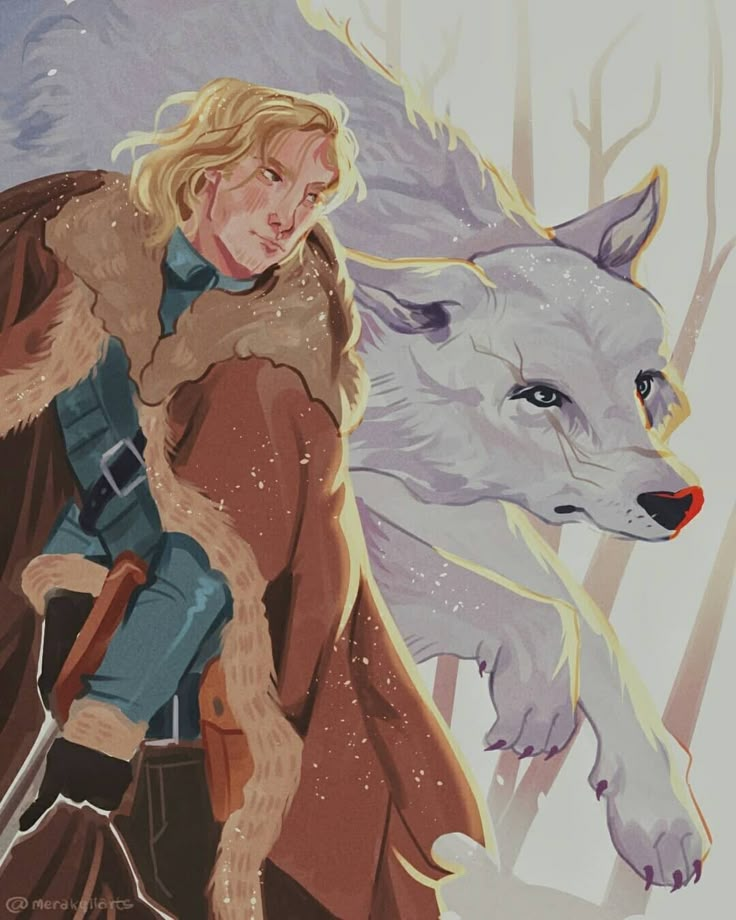
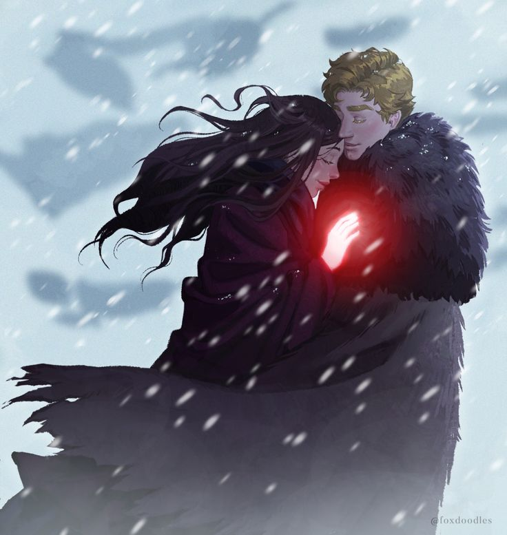
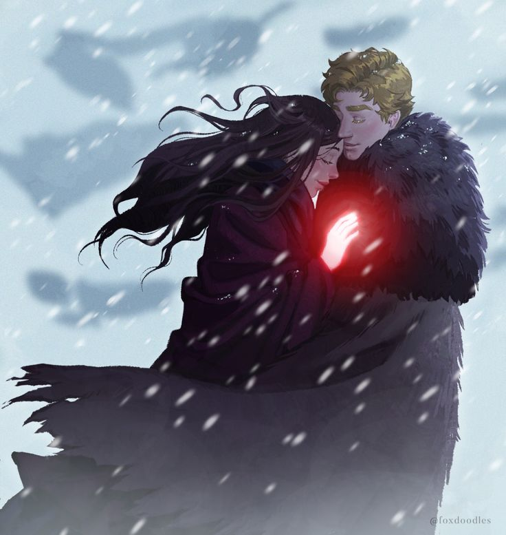

Матиас Хельвар
Бывший дрюскель, воин и человек, который учится сомневаться
Матиас Хельвар — фьерданец, воспитанный в ненависти к гриша. Он строг, дисциплинирован и верен кодексу, но его убеждения начинают рушиться после встречи с Ниной Зеник.

Биография
Матиас вырос в южной фьерданской деревне около Хольмхенда. Его родители и младшая сестра были убиты группой инфернов, которые атаковали их родную деревню. Матиас стал дрюскеллем, чтобы отомстить за семью, и быстро продвигался по службе под крылом Ярла Брума. Как младший дрюскелле, Матиас не особо ладил с остальными мальчиками, хотя был самым сильным и быстрым среди них. Он часто думал о том, чтобы выйти из их рядов.
Матиас первоначально был Дрюскелле из Фьерды, и лучшим в его рядах после того, как его взял под крыло командующий Дрюскелле, Ярл Брум. У него был спутник-волк по имени Трассел, что в переводе с Фьерданского означает «смутьян». Он охотился на Гришей, как того требовала их религия, как утверждали Дрюскелле, и находился на корабле, на котором была заключена Нина. Он пережил кораблекрушение вместе с Ниной, и они путешествовали вместе, пока Нина не отправила его в Хеллгейт как работорговца во время их пребывания в Кеттердаме.
Читать подробнее
Попав в тюрьму Хельгейт по вине обстоятельств и предательства, Матиас проводит годы, переосмысливая свои взгляды. Освобождение и присоединение к команде Каза становится для него шансом искупить прошлые ошибки.
Личность
Матиас изначально был заключенным в Хеллгейте, бесчеловечной тюрьме, куда его бросили после того, как Нина заявила, что он работорговец. Год заточения сделал его холодным, жестоким, полным ненависти и неумолимым, и в живых его держало желание отомстить девушке, которая предала его. Даже после побега Матиас был еще более зол и холоден, чем вначале с Ниной. Время, проведенное с Отбросами, сделало его более раскованным и искренним, но он все еще оставался замкнутым и вспыльчивым, особенно с теми, кого плохо знал. Однако слабость, которую он всегда питал к Нине, росла на протяжении всего путешествия Воронов до точки привязанности.
Навыки и способности
- Отличная физическая подготовка и сила
- Владение холодным оружием
- Военная тактика и дисциплина
- Знание обычаев Фьерды
Интересные факты
- Матиас боится стать тем, кем его учили быть
- Он уважает силу и честность
- Его чувства к Нине противоречат воспитанию
 



 



 
